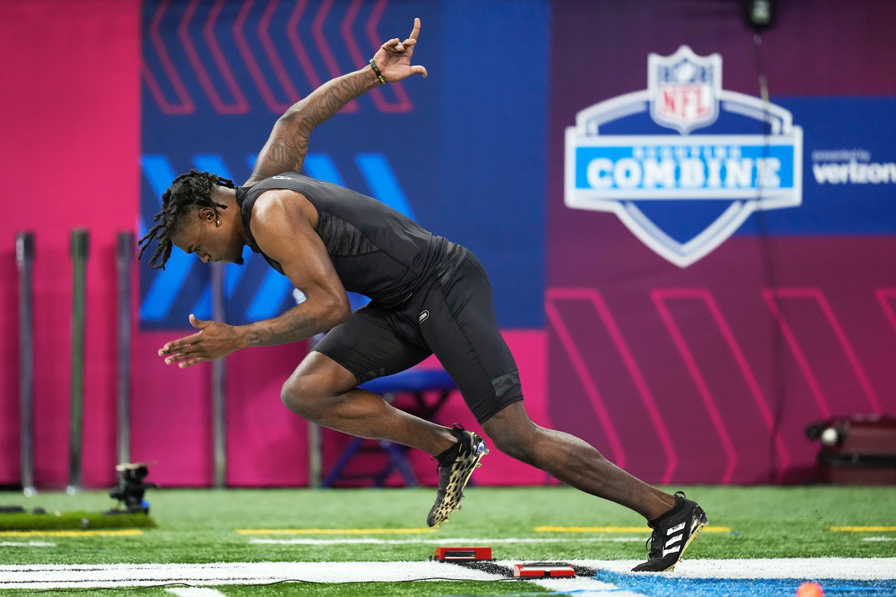

The Total Eclipse has Arrived
Victor Wembanyama’s arrival to the NBA was greeted with mystical fanfare. Heralded as the best draft prospect since LeBron James, yet most fans had never watched him play a game in full length due to Wembanyama playing…

Victor Wembanyama’s arrival to the NBA was greeted with mystical fanfare. Heralded as the best draft prospect since LeBron James, yet most fans had never watched him play a game in full length due to Wembanyama playing…

In the NFL combine, prospects perform live on-field drills, athletic testing, and conduct interviews with executives and evaluators from all 32 NFL teams. After the combine, the teams take the information gained from…